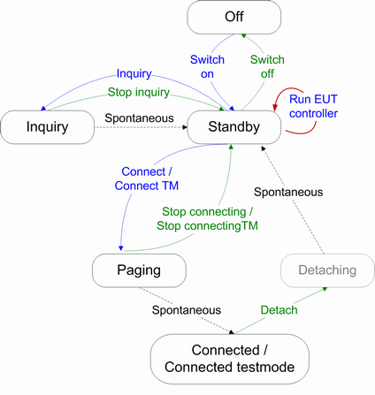
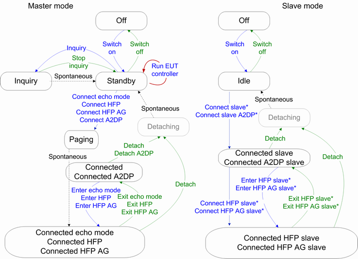
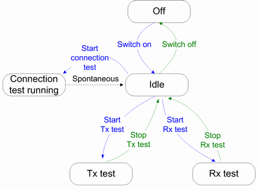

The following section describes the main signaling states and state transitions:


Connection status | Description |
|---|---|
"Off" | The signaling is switched OFF; all other signaling states are only available if signaling is switched ON. |
"Standby" | Bluetooth standby state; the default and initial state after signaling is switched ON. In this state, no RF signal is generated. |
"Run EUT controller" | The R&S CMW sends a reset EUT command via USB connection. If the EUT is recognized at the USB interface, its Bluetooth address is discovered, inquiry is not necessary to be executed. The selected operating mode is enabled at the EUT, see "Operating Mode, Profile". |
"Inquiry" | The R&S CMW tries to discover nearby Bluetooth devices. The EUT basic parameters are stored for the respective device (BD_ADDR, scan repetition mode, clock, class of device). Extended inquiry responses are ignored. |
"Paging" | After activating the "Connect"/"Connect Testmode" hotkey, the R&S CMW transmits a signal to synchronize and connect/connect test mode to a known Bluetooth device. In the intermediate page state, the R&S CMW tries to coincide with the slave's scan activity by repeatedly transmitting the paging message. |
"Connected" | An ACL link between master and slave is established. |
"Connected A2DP" | An ACL link between master and slave is established. The R&S CMW acts as A2DP source, the EUT acts as A2DP sink. |
"Connected testmode" | An ACL link between master and slave is established and the selected test is running. |
"Connected echo mode / HFP / HFP AG" | An ACL link between master and slave is established, SCO/eSCO link on top of ACL link is established and the selected mode / audio profile is running. |
"Idle" | The R&S CMW is set to slave mode. It becomes discoverable and expects the EUT to connect as a master. Before connecting as a master, some EUTs require a pairing information to be stored during a previous successful connection to the R&S CMW. |
"Connected slave" | The EUT as a master is connected via an ACL link. The R&S CMW acts as a slave. |
"Connected A2DP slave" | The EUT as a master is connected via an ACL link. The R&S CMW acts as an A2DP source, the EUT acts as an A2DP sink. |
"Connected HFP slave / HFP AG slave" | An ACL link between master and slave is established, SCO/eSCO link on top of ACL link is established and the selected audio profile is running in slave mode. |
"Detaching" | An established ACL link is being disconnected and the master signal is switching off. |
The "Connection status" pane for BR and EDR indicates the current signaling state, see "Connection Status Tab - Connection Status".

Connection status | Description |
|---|---|
Off | The signaling is switched OFF; all other signaling states are only available if signaling is switched ON. |
Idle | Initial state after the R&S CMW has recognized an EUT connected via USB interface, no RF signal is generated. |
Connection test running | The R&S CMW sends reset command to the EUT and waits for the response. This test is triggered manually, see "Connection Check (hotkey)". |
Tx/Rx test | Tx/Rx test in direct test mode in progress, see "Direct Test Mode (LE)". |
Current signaling status of LE connections is only displayed in the connection status information at the bottom of BER view, BER search view and TX measurement view.